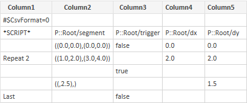

Optimize scenarios#
Rationale#
SCADE Test scenarios (SSS) may be produced from recording sessions or by any tools. Such scenarios can contain large number of cycles and data that lead to huge file sizes.
However, SCADE Test offers means to minimize the verbosity of test scenarios:
CSV format: names of variables are written once.
Counters: identical consecutive input lines are written once.
Empty values: values or part of values identical to the former cycle do not need to be rewritten.
Description#
This tool optimizes a SCADE test scenario by removing duplicated directives such as setting an input with the same value during consecutive cycles.
Usage#
usage: ansys_scade_ps_optimize_sss [-h] -m <model> -a <alias> -s <scenario> -o <output>
Ansys SCADE Power Scripts: Optimize test scenarios (SSS)
options:
-h, --help show this help message and exit
-m <model>, --model <model>
Scade model
-a <alias>, --alias <alias>
alias file (sss)
-s <scenario>, --scenario <scenario>
input scenario (sss)
-o <output>, --output <output>
output scenario (csv)
Note
The
--aliasparameter is required. Provide an empty file if no alias file is available.
For example:
ansys_scade_ps_optimize_sss -m MyModel.etp -a Alias.sss -s S1.sss -o S1.csv
This command optimizes S1.csv from S1.sss and Alias.sss. The model is required to get access to the definition of types.
S1.sss:
SSM::set segment {((0.0, 0.0), (0.0, 0.0))} SSM::set trigger false SSM::check dx 0.0 SSM::check dy 0.0 SSM::cycle 1 SSM::set segment {((1.0, 2.0), (3.0, 4.0))} SSM::set trigger false SSM::check dx 2.0 SSM::check dy 2.0 SSM::cycle 1 SSM::set segment {((1.0, 2.0), (3.0, 4.0))} SSM::set trigger false SSM::check dx 2.0 SSM::check dy 2.0 SSM::cycle 1 SSM::set segment {((1.0, 2.0), (3.0, 4.0))} SSM::set trigger true SSM::check dx 2.0 SSM::check dy 2.0 SSM::cycle 1 SSM::set segment {((1.0, 2.5), (3.0, 4.0))} SSM::set trigger true SSM::check dx 2.0 SSM::check dy 1.5 SSM::cycle 1 SSM::set segment {((1.0, 2.5), (3.0, 4.0))} SSM::set trigger false SSM::check dx 2.0 SSM::check dy 1.5 SSM::cycle 1
S1.csv:
#$CsvFormat=0 *SCRIPT*;P::Root/segment;P::Root/trigger;P::Root/dx;P::Root/dy ;((0.0,0.0),(0.0,0.0));false;0.0;0.0 Repeat 2;((1.0,2.0),(3.0,4.0));;2.0;2.0 ;;true;; ;((,2.5),);;;2.5 Last;;false;;
Limitations#
Not supported directives:
SSM::alias_valueSSM::check_image
Not supported expected values:
<lambda>expressions<range>expressions
The alias directives are used by the script but not referenced in the produced output scenario.
Setting a tolerance between a check directive and a cycle directive produces a different output scenario. Indeed, the tolerances line is written before the cycle lines.
Input scenario:
SSM::check f1 3.14 SSM:set_tolerance real = 0.0001 SSM::check f1 6.024 SSM::cycle
Output scenario:
*SCRIPT*;f1;f2 Tol;0.0001;0.0001 Last;3.15;6.024
A tolerance cannot be set on a part of a variable.